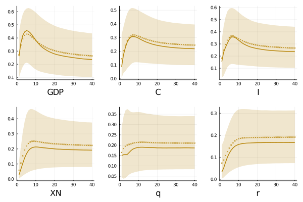

Small Open Economy
DEFINITION OF SOE.
and Small Open Economies business cycles
 Terms of trade have been largely considered an important determinant of business cycles in Small Open Economies (SOEs). Current estimates of their contribution to fluctuations in real variables show a large variability and do not exploit the full information from global indicators to improve their reliability. In this paper, I propose a novel strategy that allows me to separately identifies innovations in terms of trade and global variables by extending the news-identification approach. Results show that the proposed method successfully identify a global component and suggest that it explains about a half of output volatility in emerging countries and around one-third for developed commodity exporters, while terms of trade idiosyncratic movements are responsible for 10 percent.
DEFINITION OF SOE.
An innovation that causes a comovement among real and nominal global variables as GDP, prices and interest rates.
In this document, a Non Fundamental shock is concieved as a discordance (both short and long run) between a variable and their structural behave,
A vector autoregressive model in which a group of variables do not received any feedback for the rest of the system except for themselves.
One of
Jointly with IRF, forecast error variance decomposition is a main tool in VAR analysis. It summarizes the contribution of each shock (or a set) into the forecast variances of an specific variable
This research was coded in Julia 1.4 (it will developed in more languages promptly)
If you have any doubt, suggestions, or simply want to talk, you can contact with me.